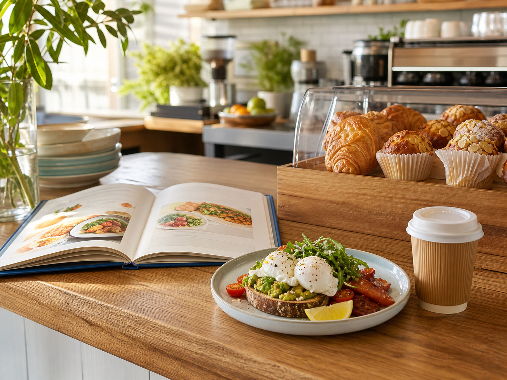
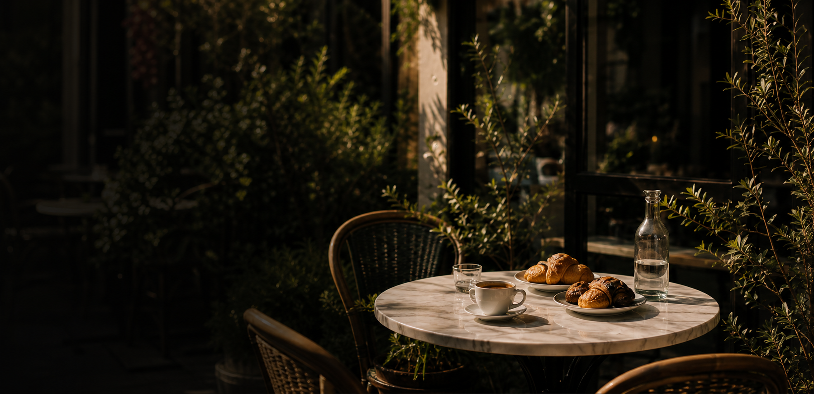
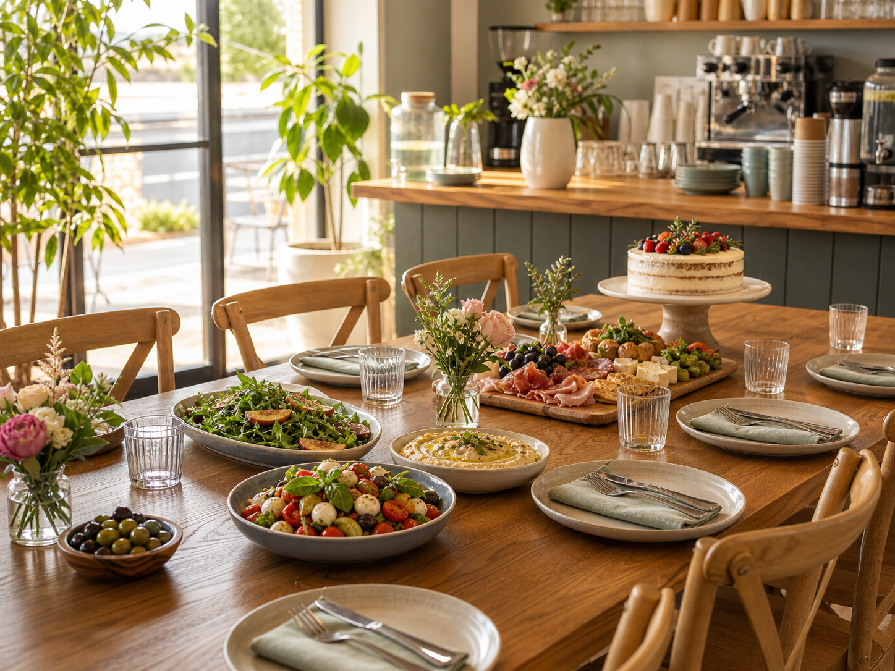

Menu
Breakfast, lunch, pastries, bowls and more. Seasonal favourites made with quality ingredients.
Discover menuCafe & Catering · North Lakes
Corner Table Cafe is a Goodman SEO sample for a local hospitality business. It follows Australian cafe patterns around menus, takeaway, bookings, office catering and functions without copying competitor wording.




Core pages
The page structure is based on Australian competitor patterns, then rewritten as original sample content for Goodman SEO.

Breakfast, lunch, pastries, bowls and more. Seasonal favourites made with quality ingredients.
Discover menu
Specialty coffee and relaxed brunch in a warm, leafy space. Perfect for slow mornings.
Explore brunch
Office mornings, team lunches and events, delicious, reliable and effortless.
Catering optionsBeautiful spaces for birthdays, celebrations and corporate events. Let plans feel memorable.
Functions & eventsHow it works
Read the service page and check whether the fit is right.
Send an enquiry with the practical details for a quote or booking.
Use the site as a starting point for real buyer conversations.
Local coverage
These suburbs make the demo feel local. They should be replaced or tightened when a real business buys the site.
Use the form to send the enquiry to Goodman SEO. Phone and testimonials are sample placeholders until a real buyer supplies verified details.